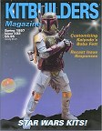
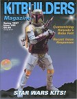

What people stand for isn't everything.
What they fall for counts, too.
A big "Wookie" welcome to issue #22, as we jump on the Star Wars revival band wagon. This issue's cover kit (Kaiyodo's Boba Fett) was built, painted and customized by our own Joe Jobe. You can read how Joe customized this piece with a lightsaber. (Just kidding about the lightsaber.) Boy, did we get some responses on last issues recasting article. They came by phone, letters, and e-mail. You can read some of them in this issue. We know there's quite a bit of reading there, but it just goes to show that people have strong opinions on this topic. (We know that some may feel that this is a waste of magazine space. Though as we've said before, "this is your hobby" and you should know what's going on in it.)
Once again our "Hollywood insider", Mark Paskell, gives you the scoop on new movies in the works. Movies that most likely will spawn new kits. Mike Fredericks takes us back twenty years, when Star Wars models were "new". Joe Jobe also gives us his favorite picks from the Star Wars figure kits that are currently available. In the "Plastic Injection" Joe answers some questions, frequently asked of him, about styrene kits. Rich Larson does some house cleaning and comes up with some kit customizing ideas. Plus he shares his opinion with you on seventeen new kits that are now available. Speaking of tips and sharing, John Tucky does the same thing in his Xacto Facto column. Jean Elliot is back, and this time he tackles a figure that is a cross between an Alien and a Predator.... the Hybrid.
In closing, the words of a great man from New Jersey come to mind, "it's just a hobby" keep it fun. ENJOY!!!
PS: It you haven't yet, try to attend one of the model shows coming up this year. It's a great way to put faces with names, make new friends and contacts, and of course... see and buy "cool" kits.
The Gremlins in the Garage webzine is a production of Firefly Design. If you have any questions or comments please get in touch.
Copyright © 1994-1997 Firefly Design.